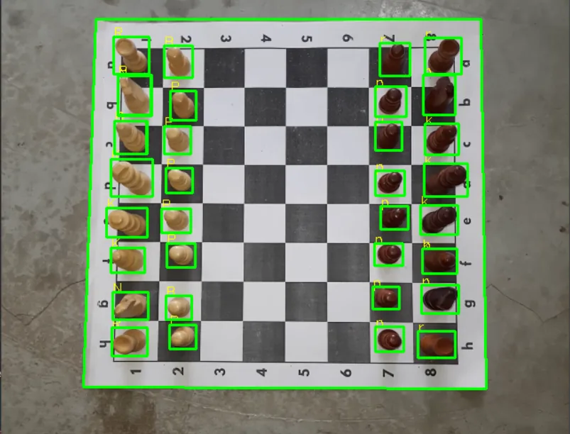

Discovery
Define the use case, constraints, and whether CV or multimodal AI is the right fit.
Currently available for freelance and consulting
I build practical computer vision systems with a focus on real-world use and deployment.
Available for prototype builds, CV system debugging, model optimization, and focused consulting on real-world deployment decisions.

Services
I'm most useful as a technically strong individual contributor for a clearly defined AI task, prototype, or improvement project.

End-to-end detection, segmentation, keypoint, classification, and tracking pipelines for applied vision systems. Dataset curation, training, and evaluation included.

Export, runtime, and hardware-specific optimization to make practical CV models faster and deployable. Benchmarking and profiling included.

Rapid prototyping of generative AI systems with a focus on practical workflows, multimodal reasoning, and clearly defined outcomes.

Turning unclear requirements into experiments, hardware choices, and realistic deployment paths. Discovery → scoping → working prototype.
Define the use case, constraints, and whether CV or multimodal AI is the right fit.
A focused proof of concept with the shortest path to learning and clear tradeoffs.
Translate the prototype into a practical deployment path with optimization and realistic next steps.
Background
This section summarizes the kind of technical work I bring into engagements without sharing confidential employer or client material.

Focus Areas
These are representative capability areas, intentionally described at a general level rather than tied to confidential project work.


End-to-end systems that move from image input through inference, post-processing, and business-ready outputs.
A good fit when success depends on the whole workflow, not only the model checkpoint.
GitHub · ChessSense-AI

Improving inference speed, export paths, and runtime behavior so models work better on the hardware you actually have.
Best for teams that already have a model and need help making it faster, lighter, or more deployable.
Performance · Deployment support

Turning ambiguous ideas into a practical first experiment, sensible evaluation plan, and a realistic next step.
This is usually the highest-leverage point early on: better scoping, fewer bad assumptions, and faster learning.
Consulting · Feasibility work
Writing
I occasionally write about computer vision, my experiences building solutions, and technical concepts to help others in the space.
Contact
Best fit for focused freelance work: prototypes, model debugging, optimization, edge deployment, and applied CV with clear goals.